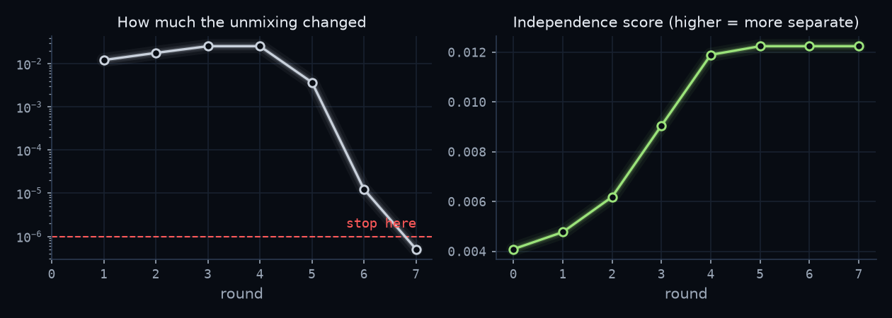
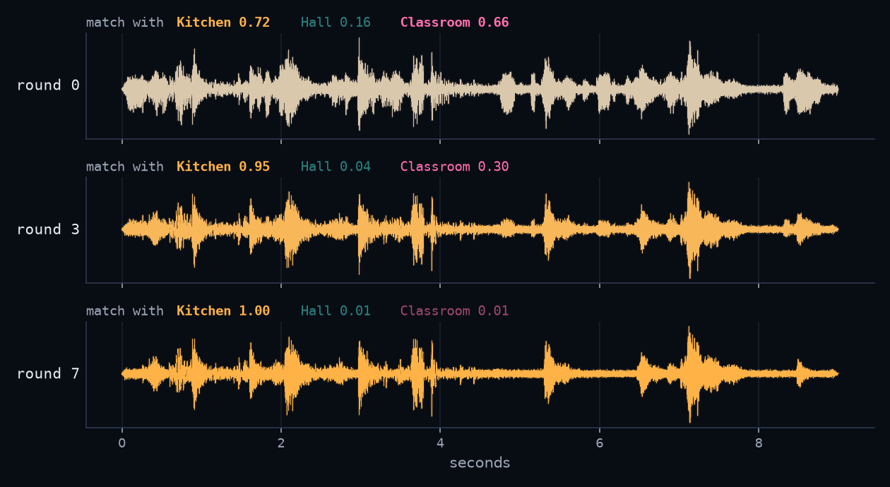
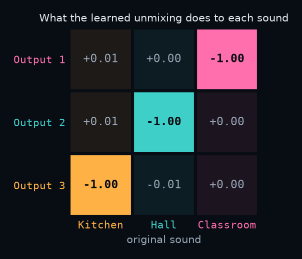

About this project
This is a small project about ICA (Independent Component Analysis) for K-12 learners. Kids walk around their school and record everyday sounds in different places: the kitchen, the hall, a classroom. The computer mixes those sounds together, as if several microphones in one room heard them all at the same time. Then ICA pulls them apart again, using only the mixed recordings.
Everything runs in your browser. You can drag, listen and compare. No formulas needed.
Right now the page uses example sounds (openly licensed recordings, see the credits at the bottom) until our classroom recordings are added. The kids did not record these.
This page needs JavaScript to load the sounds.
Where the idea came from
I wanted kids to meet ICA somewhere familiar and fun and to see what it can do in real life. The point isn't the math behind ICA. It's to make the cocktail party problem something they can actually hear and see being solved.
The cocktail party problem: in a noisy room full of people talking, you can still follow one friend's voice, so can a computer pull one sound out of a mix too?
What is ICA?
1. A kind of unsupervised learning
ICA is a kind of unsupervised learning. Nobody gives the computer labels or right answers. It is never told “this part is the kitchen.” It finds the structure in the data by itself. (In supervised learning, you show the computer examples with the answers, like photos marked “cat” or “dog”.) K-means clustering is another example of unsupervised learning; I made a small project about it too: K-means palette.
Here, ICA gets only the mixed microphone recordings and looks for a way to split them into tracks that have nothing to do with each other.
2. How it is usually taught
ICA is usually taught in university courses, with matrices, probability and “statistical independence”, and plots of abstract signals. That's a lot to ask of K-12 learners who don't have that background yet.
3. How I teach it
I start from something kids already know: the sounds of their own school. They record sounds around school, see each moment of sound as a dot, and turn the dial themselves to unmix two sounds. Only after that does the computer do it, so they can see that it is doing the same thing they just did, only faster.
The ICA visualizer
The smallest version of the problem: two sounds, two microphones. Pick two of the example sounds and walk through the steps.
Step 0
The meter is highest when the dial lines up with the arms of the cross.
The bars show how often each loudness happens. Mixing makes the bars rounder, like a smooth hill. When the dial pulls the sounds apart, the bars get spikier.
Show the meter for every dial position
Left = 0°, right = 180°. The red line is where the dial is now. There are two peaks because turning by 90° just swaps output 1 and output 2.
Sounds from around school: the full demo
Now with three sounds and three microphones. In the activity, kids record sounds in three places around school. The computer mixes them as if three microphones in one room heard everything at once, and then ICA pulls them apart.
Another way to do it: several phones record in the same room at the same time, and we unmix that set directly. That is closer to real life but messier, because sound bounces off the walls (echo) and reaches each phone at slightly different times.
1 · Sounds from around school
Example sounds (openly licensed recordings, standing in until our classroom recordings are added)
Kids' recordings:
2 · Microphones in one room
Each mic is in a different spot, so it hears each sound at a different loudness. The numbers say how loud each sound is at each mic (0 = can't hear it, 1 = very loud).
3 · Pull them apart
The computer only gets the three mic recordings. It never hears the sounds alone.
Heads up: the computer doesn't know which sound is which or how loud it was, so it may give them back in a different order, at a different volume, or even upside down (which sounds the same). Under each track I show which sound it matches best (1.00 = a perfect match).
This is the easy version of the problem: the computer mixes the sounds itself, perfectly in sync and with no echo, so the matches come out very close to 1.00. Real phones in a real room would not do this well.
Behind the scenes: training the model
These are real outputs from one run of FastICA (the version of ICA on this page) on the three example sounds, with the default mix from step 2 and the same starting point as the first press of “Separate”. The figures come from tools/make_figures.py, a numpy copy of the code in ica.js. I checked that both take the same 7 rounds and print the same numbers.
Step 1 · Get the sounds ready
I cut a 9-second piece from each recording, made it mono at 16,000 samples per second, and evened out the loudness with ffmpeg (tools/make_audio.sh). That's 144,000 numbers per sound. The three sounds are almost unrelated to begin with: the correlation between any two of them is below 0.01.
Step 2 · Mix, center, whiten
The script mixes the sounds with the default loudness table, moves each mic recording to the middle (centering), then stretches it to be round (whitening). After this, the only thing left to learn is how to turn.
Step 3 · Training rounds

Step 4 · Watch one output track

Step 5 · Check what it learned

Step 6 · The code for one round
This is the loop from fastICA() in ica.js that runs once per round:
var Wn = [];
for (i = 0; i < m; i++) {
for (t = 0; t < n; t++) { // wz = this output, right now
for (var v = 0, j = 0; j < m; j++) v += W[i][j] * Z[j][t];
wz[t] = v;
}
var row = new Array(m).fill(0), gp = 0;
for (t = 0; t < n; t++) { // push w toward a less bell-shaped output
var g = Math.tanh(wz[t]);
gp += 1 - g * g;
for (j = 0; j < m; j++) row[j] += Z[j][t] * g;
}
for (j = 0; j < m; j++) row[j] = row[j] / n - (gp / n) * W[i][j];
Wn.push(row);
}
Wn = symDecorrelate(Wn); // keep outputs at right angles
var change = 0; // how much did the dial move this round?
for (i = 0; i < m; i++) {
for (var dot = 0, j = 0; j < m; j++) dot += Wn[i][j] * W[i][j];
change = Math.max(change, Math.abs(Math.abs(dot) - 1));
}
W = Wn;
if (opts.onRound) opts.onRound(it, W, change);
if (change < tol) { converged = true; break; }In plain words: for each output, look at what it sounds like right now, nudge it toward a spikier, less bell-shaped sound, keep the outputs at right angles to each other, and stop when the nudge gets tiny.
Step 7 · Test that it works every time
One good run could be luck, so node test/ica-test.js tries 12 random 3-sound mixes and 18 random 2-sound mixes. This is its real output:
Sources: Kitchen, Hall, Classroom | 144000 samples each at 16000 Hz (9 s) Excess kurtosis (0 = bell curve): Kitchen 9.14, Hall 2.55, Classroom 5.66 Correlation between sources: K-H -0.0025, K-C 0.0082, H-C -0.0013 3 sounds, 3 mics: 12 random mixes (weights 0.1-1.0) mix 1 det=-0.064 rounds=7 out1=Kitchen |r|=1.0000, out2=Classroom |r|=1.0000, out3=Hall |r|=1.0000 PASS mix 2 det=0.220 rounds=9 out1=Classroom |r|=1.0000, out2=Hall |r|=1.0000, out3=Kitchen |r|=1.0000 PASS mix 3 det=-0.185 rounds=7 out1=Classroom |r|=0.9999, out2=Kitchen |r|=1.0000, out3=Hall |r|=1.0000 PASS mix 4 det=-0.094 rounds=9 out1=Classroom |r|=1.0000, out2=Hall |r|=1.0000, out3=Kitchen |r|=1.0000 PASS mix 5 det=-0.110 rounds=10 out1=Classroom |r|=0.9999, out2=Hall |r|=1.0000, out3=Kitchen |r|=1.0000 PASS mix 6 det=0.219 rounds=11 out1=Hall |r|=1.0000, out2=Kitchen |r|=1.0000, out3=Classroom |r|=1.0000 PASS mix 7 det=0.059 rounds=12 out1=Kitchen |r|=1.0000, out2=Classroom |r|=1.0000, out3=Hall |r|=1.0000 PASS mix 8 det=0.124 rounds=8 out1=Hall |r|=1.0000, out2=Classroom |r|=1.0000, out3=Kitchen |r|=1.0000 PASS mix 9 det=0.121 rounds=8 out1=Classroom |r|=1.0000, out2=Hall |r|=1.0000, out3=Kitchen |r|=1.0000 PASS mix 10 det=0.060 rounds=6 out1=Classroom |r|=1.0000, out2=Hall |r|=1.0000, out3=Kitchen |r|=1.0000 PASS mix 11 det=0.232 rounds=17 out1=Kitchen |r|=1.0000, out2=Hall |r|=1.0000, out3=Classroom |r|=1.0000 PASS mix 12 det=-0.302 rounds=10 out1=Kitchen |r|=1.0000, out2=Classroom |r|=1.0000, out3=Hall |r|=1.0000 PASS Per-source |r| over the 12 mixes: Kitchen min 1.0000 / mean 1.0000; Hall min 1.0000 / mean 1.0000; Classroom min 0.9999 / mean 1.0000 page default 3x3 mix det=0.493 rounds=7 out1=Classroom |r|=1.0000, out2=Hall |r|=1.0000, out3=Kitchen |r|=1.0000 PASS 2 sounds, 2 mics: every pair, 6 random mixes each Kitchen+Hall mix 1 det=0.250 rounds=9 out1=Kitchen |r|=1.0000, out2=Hall |r|=1.0000 PASS Kitchen+Hall mix 2 det=-0.795 rounds=5 out1=Kitchen |r|=1.0000, out2=Hall |r|=1.0000 PASS Kitchen+Hall mix 3 det=0.114 rounds=7 out1=Kitchen |r|=1.0000, out2=Hall |r|=1.0000 PASS Kitchen+Hall mix 4 det=0.379 rounds=7 out1=Hall |r|=1.0000, out2=Kitchen |r|=1.0000 PASS Kitchen+Hall mix 5 det=-0.216 rounds=11 out1=Hall |r|=1.0000, out2=Kitchen |r|=1.0000 PASS Kitchen+Hall mix 6 det=0.325 rounds=6 out1=Kitchen |r|=1.0000, out2=Hall |r|=1.0000 PASS Kitchen+Classroom mix 1 det=0.111 rounds=5 out1=Classroom |r|=1.0000, out2=Kitchen |r|=1.0000 PASS Kitchen+Classroom mix 2 det=0.369 rounds=10 out1=Kitchen |r|=1.0000, out2=Classroom |r|=1.0000 PASS Kitchen+Classroom mix 3 det=0.140 rounds=9 out1=Kitchen |r|=1.0000, out2=Classroom |r|=1.0000 PASS Kitchen+Classroom mix 4 det=0.253 rounds=4 out1=Kitchen |r|=1.0000, out2=Classroom |r|=1.0000 PASS Kitchen+Classroom mix 5 det=0.112 rounds=3 out1=Classroom |r|=1.0000, out2=Kitchen |r|=1.0000 PASS Kitchen+Classroom mix 6 det=-0.288 rounds=4 out1=Classroom |r|=1.0000, out2=Kitchen |r|=1.0000 PASS Hall+Classroom mix 1 det=-0.501 rounds=3 out1=Classroom |r|=1.0000, out2=Hall |r|=1.0000 PASS Hall+Classroom mix 2 det=0.107 rounds=5 out1=Hall |r|=1.0000, out2=Classroom |r|=1.0000 PASS Hall+Classroom mix 3 det=-0.217 rounds=5 out1=Classroom |r|=1.0000, out2=Hall |r|=1.0000 PASS Hall+Classroom mix 4 det=-0.178 rounds=6 out1=Classroom |r|=1.0000, out2=Hall |r|=1.0000 PASS Hall+Classroom mix 5 det=0.173 rounds=9 out1=Classroom |r|=1.0000, out2=Hall |r|=1.0000 PASS Hall+Classroom mix 6 det=-0.315 rounds=3 out1=Classroom |r|=1.0000, out2=Hall |r|=1.0000 PASS Per-source |r| over the 18 two-sound mixes: Kitchen min 1.0000 / mean 1.0000; Hall min 1.0000 / mean 1.0000; Classroom min 1.0000 / mean 1.0000 visualizer default (Kitchen+Classroom, 2x2) det=0.630 rounds=3 out1=Kitchen |r|=1.0000, out2=Classroom |r|=1.0000 PASS ALL PASS (pass = every output matches a different source with |r| > 0.95)
Is this AI?
- It learns from data, without labels. Nobody tells it which sound is which. The rounds you saw above are its training.
- Real products face the same problem. Voice assistants and hearing aids also need to pull one sound out of a mix (this is called source separation). Today they often use deep learning for it.
- You can look inside it. What ICA learns is a small table of numbers (a 3×3 unmixing table here) that you can print and check, like in step 5 above. That makes it a nice first example of explainable AI, which is what my research is about.
Where ICA shows up in real life
- Pulling a voice out of background noise, for example in hearing aids or voice assistants.
- Separating the singing from the music, like making a karaoke track.
- Cleaning brain-wave recordings (EEG) by removing the signals made by eye blinks.
- Separating overlapping signals picked up by sensors, or mixed together in images.
Challenges & how I solved them
Starting from zero
Some students had no background to build on, and without any prior knowledge they couldn't grasp what ICA was at all.
[Lucy to fill in: how I addressed this]
[More challenges to be added]
What I saw with learners
[Results with learners to be added]